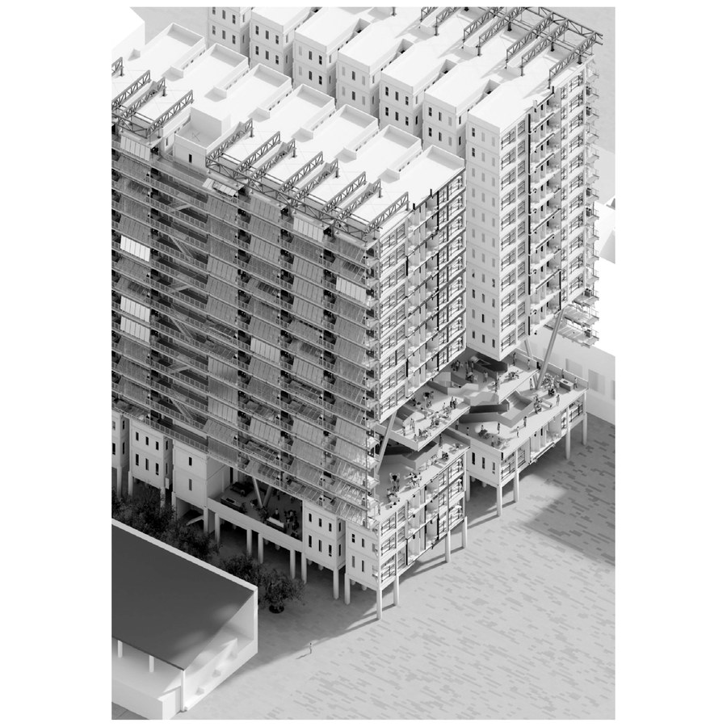
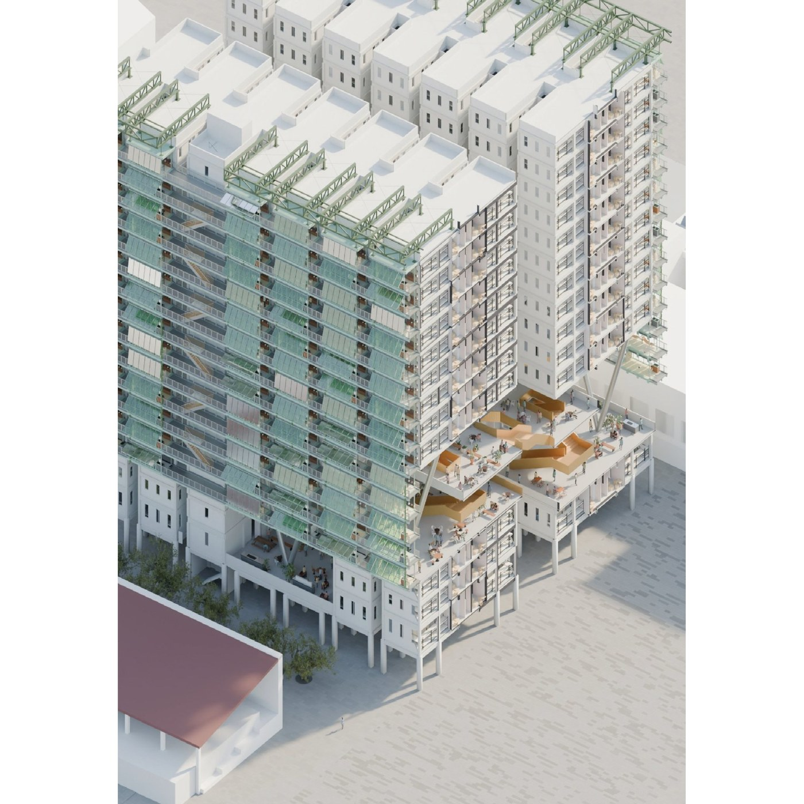
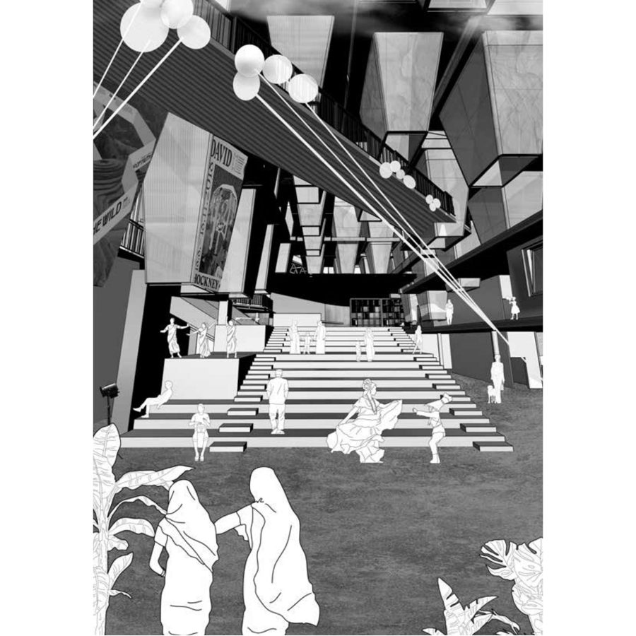
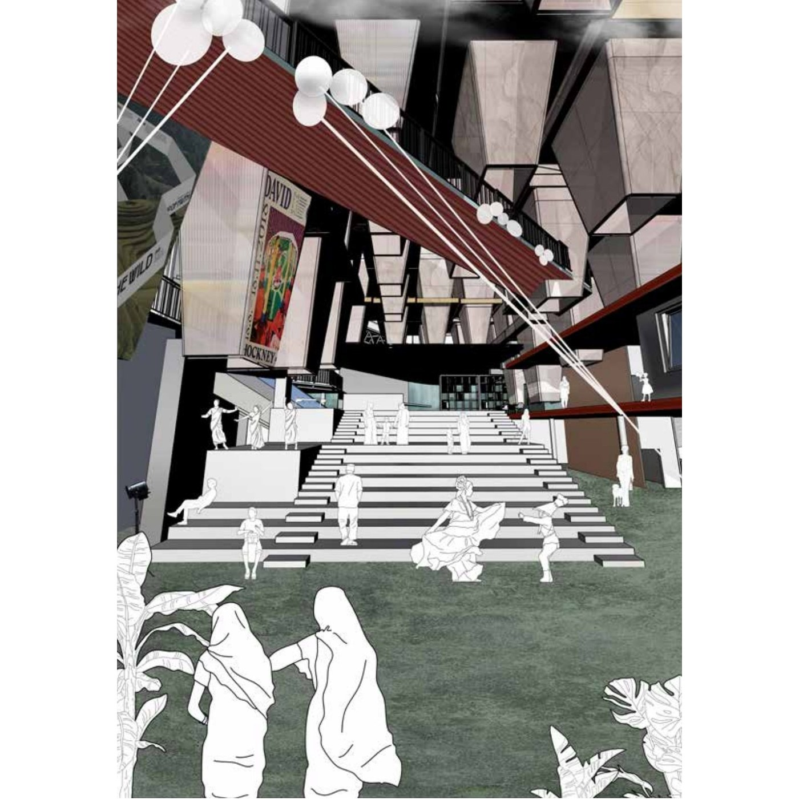
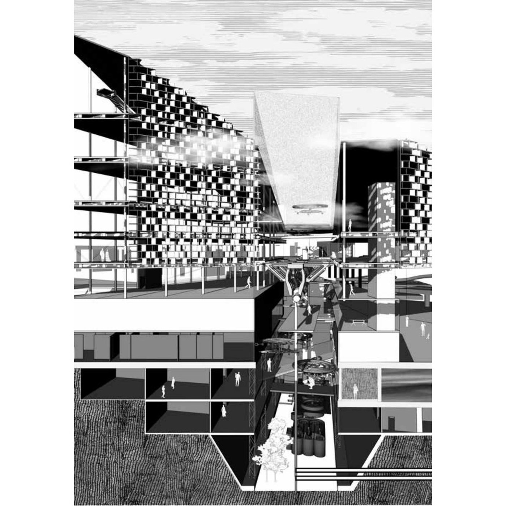
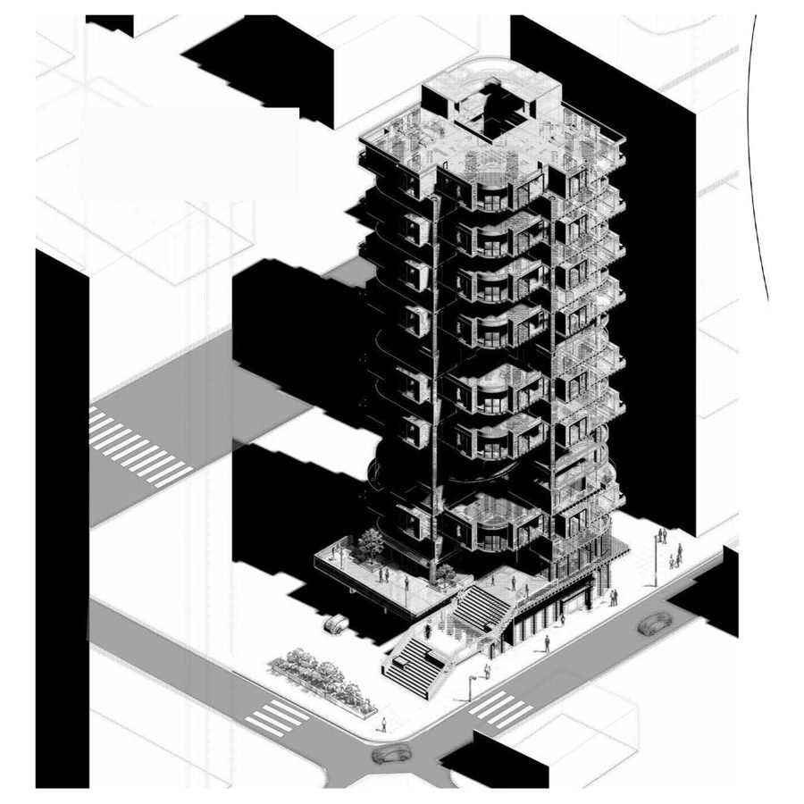
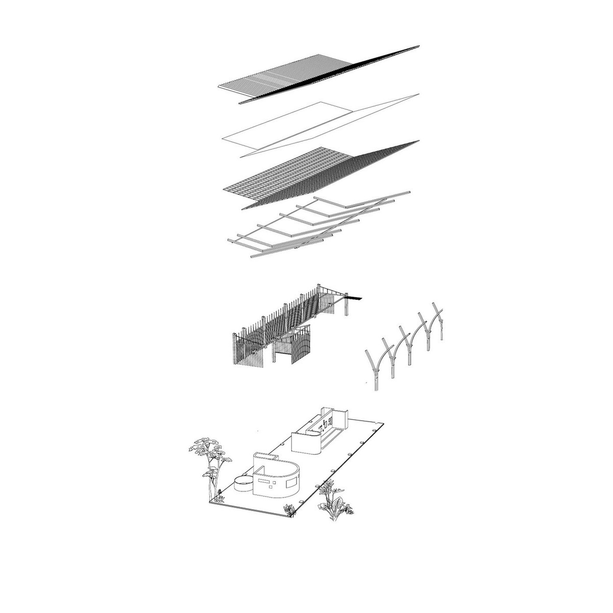
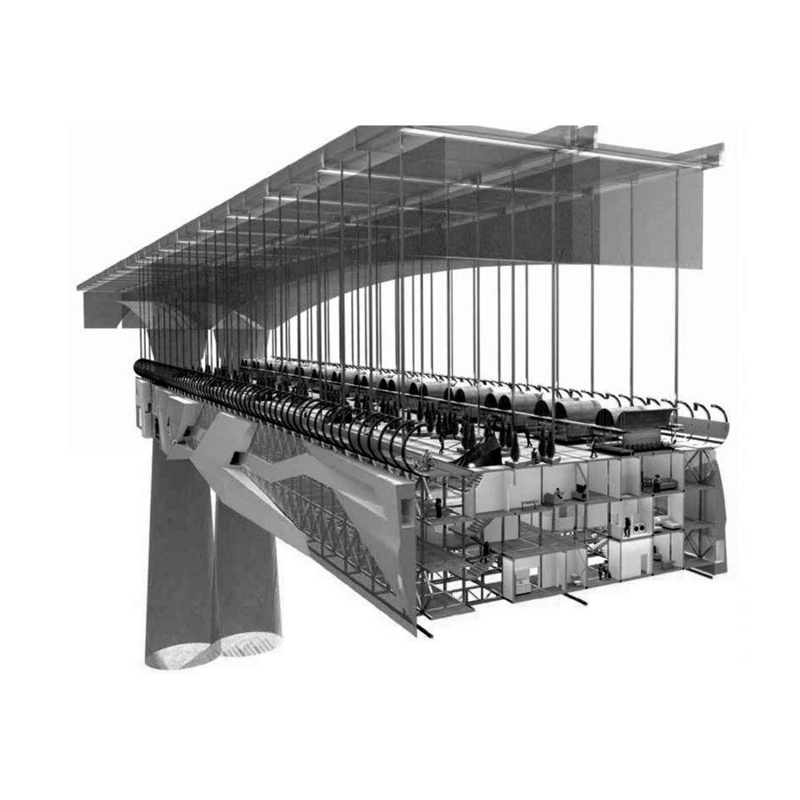
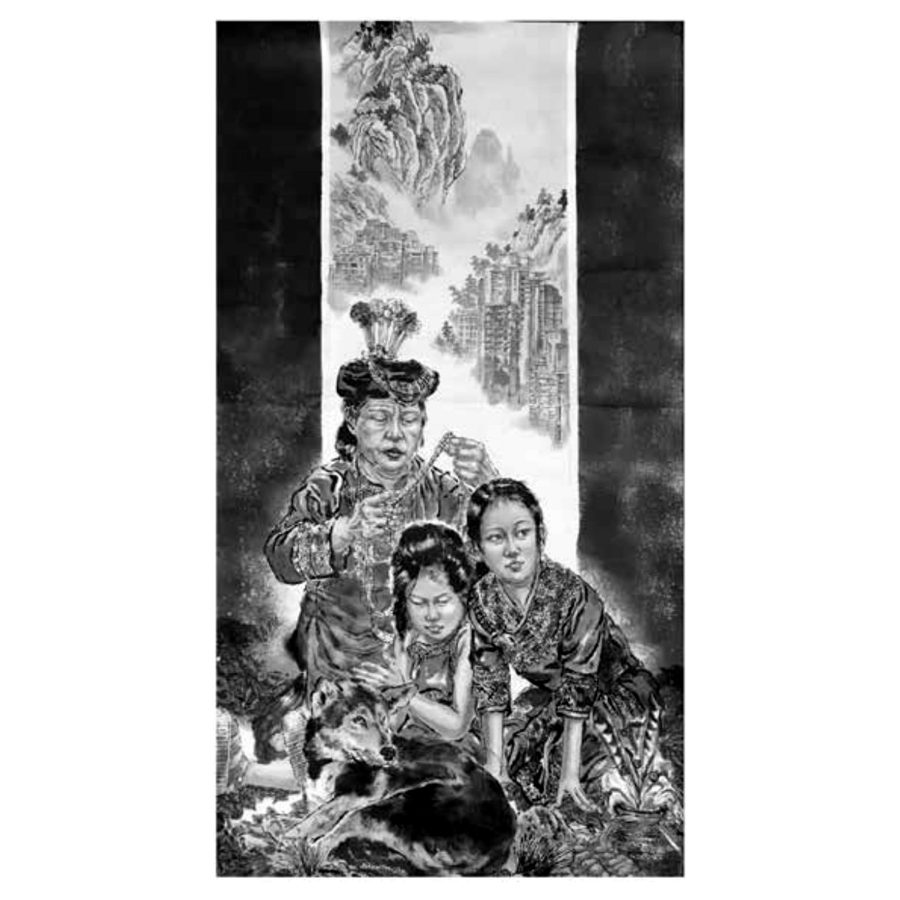
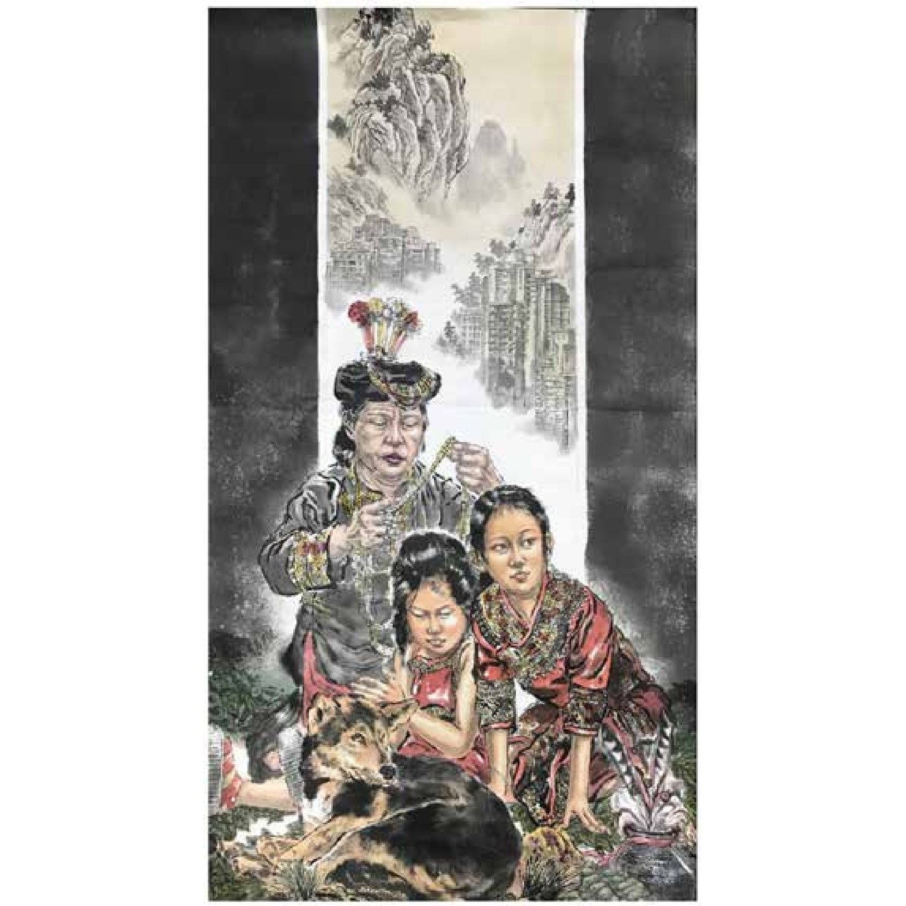

Architecture student at National Cheng Kung University, working on how overlooked ground in the city can be reactivated: under expressways, behind shophouses and inside workers’ dormitories.
AYDA Awards Taiwan, Gold Award 2024 · NCKU Vertical Design Competition, First Prize 2025 · NUS Archival, Selected Design · WCTE 2025, Conference Publication


Living Out of SyncFrom compulsory sharing to spatial choice on Jurong's industrial waterfront

Revitalizing Tanjong PagarCulture as currency in shaping a historic district
Urban SymbiosisIntegrating ecosystems and energy networks in future cities
Vertical CommonsReclaiming public life above the city
Maternity Centre in SenegalA community healthcare infrastructure proposal
DownshiftingReclaiming the space beneath the expressway

Other WorkInstallation, renovation, design-build and ink painting